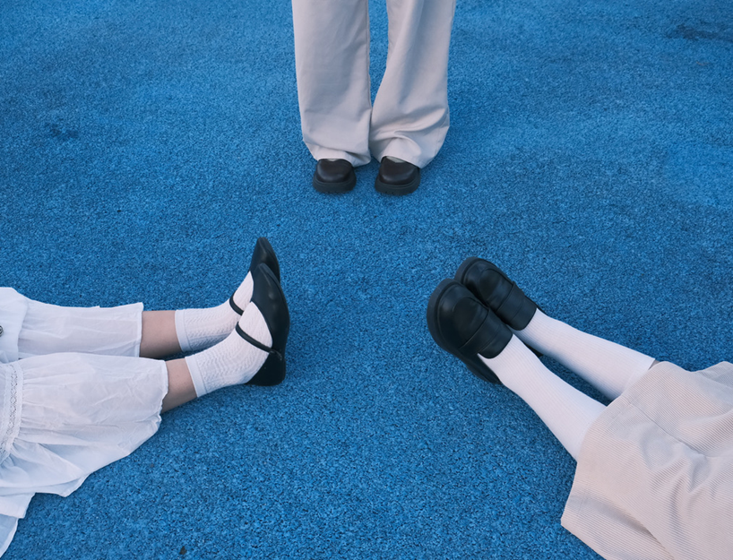
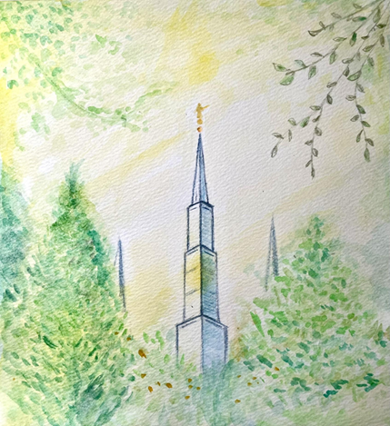
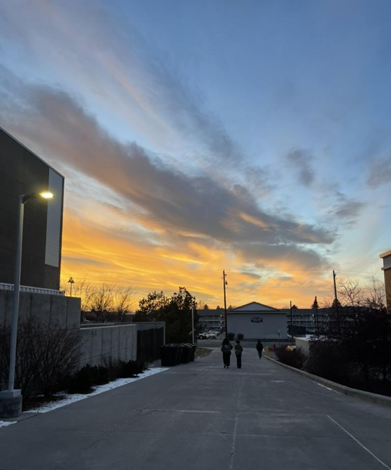
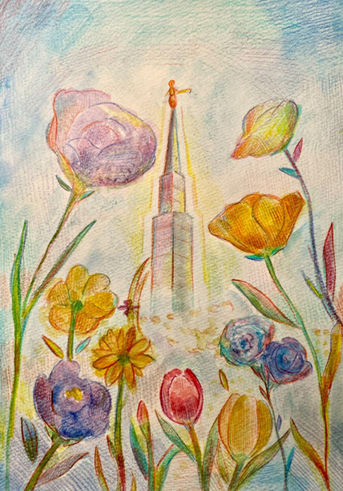
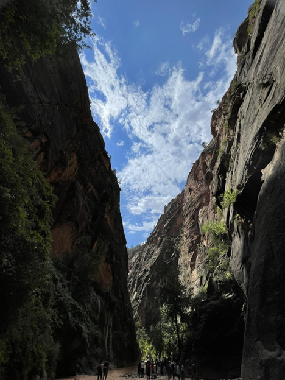
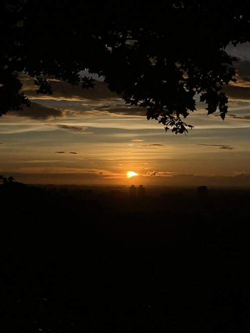
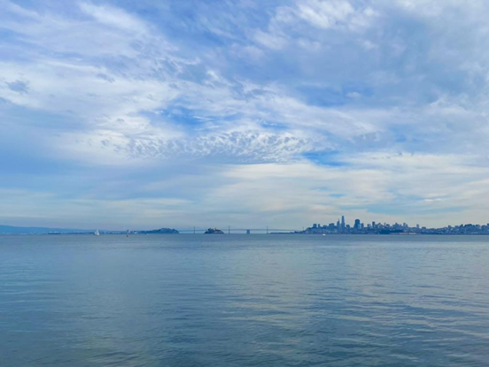

This page focuses on moments that feel magical even though they are ordinary. Finding Every Day's Miracle is a space dedicated to the beauty of the "ordinary." We believe that miracles aren't reserved for the grand and distant—it’s found in the quiet spires of a temple, the grit of a late-night study session, and the shifting colors of a hometown sunset. Our mission is to help you pause, look closer, and recognize the miracles that make life extraordinary.

The Temple!
The sacred spires reach toward the heavens, serving as a peaceful bridge between the earth and the divine. This holy sanctuary offers a quiet space for reflection and a reminder of the eternal miracles found in faith.

Studying at BYUI!
Dedicated hours of learning in Rexburg transform simple textbooks into stepping stones toward a bright and purposeful future. Every late-night study session is a small miracle of growth, discipline, and the pursuit of knowledge.

The Beauty of the Earth!
From vibrant meadows to rolling hills, the natural world displays a stunning gallery of colors and textures for all to see. Taking a moment to appreciate these landscapes reveals the intricate artistry woven into every corner of our planet.

The Miracle of Rocks!
Stones tell stories of time. Shaped by earth's nature, rocks remind us that we're here to be slowly molded into something greater than ourselves. Red can identify rocks by taste!

Sunsets at Home!
As the day draws to a close, the sky transforms into a canvas of brilliant oranges and deep, glowing ambers. This nightly miracle provides a moment of stillness and gratitude right from the comfort of our own windows.

The Beauty of The Bay Area
The iconic coastline and rolling fog create a unique atmosphere where urban life meets the rugged beauty of the Pacific. Exploring these shores offers a constant reminder of the diverse and majestic wonders found within the Bay. Some classmates are from that region!